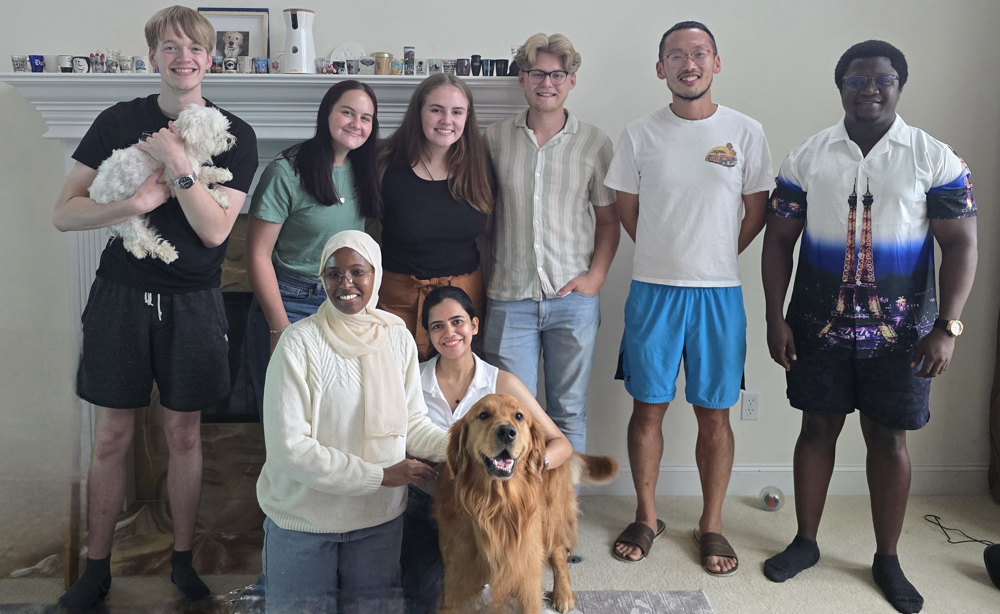

Our group study heterogeneous catalysis to build a sustainable future. We couple chemical and engineering approaches to decipher the science behind catalytic reactions that tackle rising challenges related to energy and environment, such as plastic recycling, hydrogen storage/release, biomass conversion, and carbon circularity.
We use and develop state-of-the-art spectroscopic and kinetic tools to understand how catalyst surfaces look like during the reaction at the atomic level, and how molecules react on them. In this way we can learn WHY catalysts work, WHAT structures are responsible for the activity, and HOW to steer the behaviors of molecules. Based on these fundamental scientific principles, we rationally design next-generation catalytic materials and processes.
See the "Research" page for more (nerdy) details.
